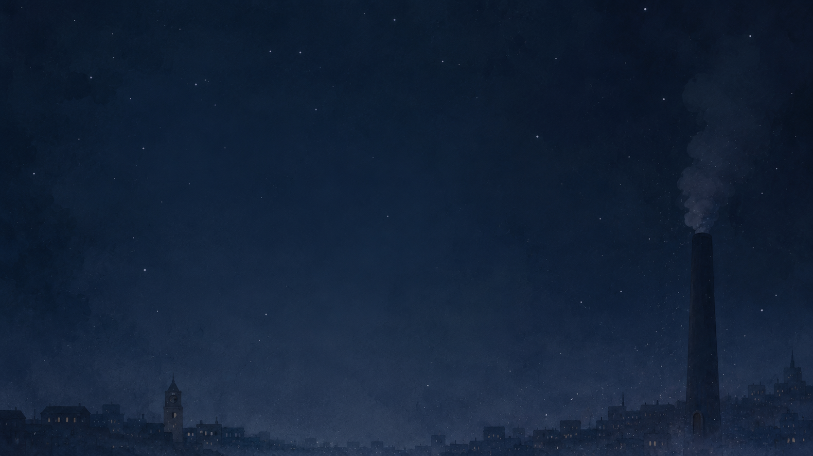
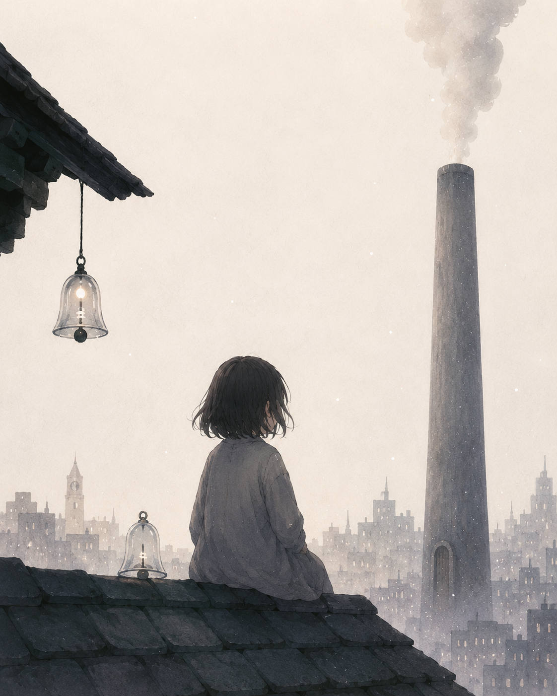

✦
시간 눈
어제와 내일이 눈처럼 내리는 도시.
굴뚝, 유리 종, 시간 눈, 지붕 위의 아이. 사이트 전체의 이미지는 책의 상징을 따라 천천히 펼쳐지는 삽화처럼 구성했다.
BOOK PAGE
도시 아스테르는 해마다 겨울이 오면 눈이 내리지 않았다.
대신 시간이 내렸다.
흰 가루처럼 부서진 어제와 은빛 조각처럼 반짝이는 내일이 하늘에서 조용히 떨어졌다.
도시 아스테르에는 겨울마다 눈이 내리지 않는다. 대신 흰 가루처럼 부서진 어제와 은빛 조각처럼 반짝이는 내일이 하늘에서 내려온다.
사람들은 그 시간을 항아리에 담아 먹고 살아가지만, 아무도 그 시간이 무엇으로 만들어지는지는 묻지 않는다. 이야기는 울 수 없는 아이 니아가 금지된 미소 굴뚝 아래로 내려가며 시작된다.
어제와 내일이 눈처럼 내리는 도시.
울지 못하는 아이의 손끝에서 자라는 슬픔.

사람들이 팔아버린 울음으로 내일을 만드는 장소.
울음은 사람을 무너뜨리기도 하지만,
때로는 사람과 사람 사이에 놓이는
가장 투명한 다리가 되었다.

슬플 때마다 손끝에서 투명한 유리 종이 자라나는 아이.
니아는 평범한 아이였다. 빵 껍질을 좋아했고, 지붕 위에서 시간 눈을 받아먹었다. 하지만 니아는 자기 목소리로 울 수 없었다.
니아의 결핍은 단순한 불행이 아니다. 그것은 이 도시가 감추고 있는 비밀과 연결되어 있다. 니아가 잃어버린 울음은 곧 도시 전체가 잃어버린 진실이기도 하다.
Ⅰ
사람들은 시간을 먹고, 저장하고, 나누어 살아간다.
Ⅱ
슬픔은 가벼운 마음 상점에서 팔 수 있다.
Ⅲ
굴뚝 밑에는 오래된 울음이 산다고 전해진다.
책장을 넘기듯 읽히도록, 본문은 넓은 여백과 낮은 채도의 종이 질감 위에 배치했다.
도시 아스테르는 해마다 겨울이 오면 눈이 내리지 않았다.
대신 시간이 내렸다.
흰 가루처럼 부서진 어제, 은빛 조각처럼 반짝이는 내일, 손바닥에 닿자마자 녹아 사라지는 한숨만 한 오후들이 하늘에서 조용히 떨어졌다.
사람들은 아침마다 문밖에 쌓인 시간을 삽으로 퍼 담아 항아리에 보관했다. 어떤 집은 젊은 날을 장작처럼 쌓아두었고, 어떤 집은 아직 오지 않은 생일을 설탕처럼 아껴두었다.
상실은 사라지는 것이 아니라, 다른 모양으로 남는다.
기억은 아프기 때문에 인간을 인간답게 만든다.
거짓된 행복은 때때로 진실한 고통보다 잔혹하다.
어른이 된다는 것은 슬픔과 함께 걷는 법을 배우는 일이다.